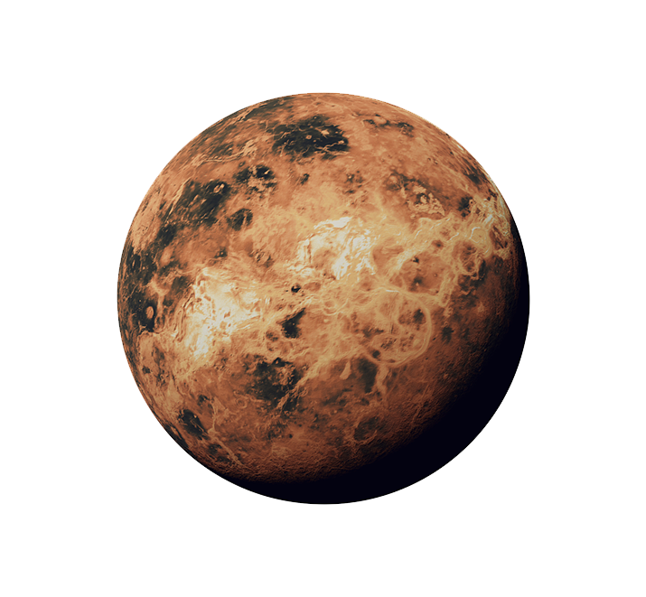

Details of the Planets
Mercury

Discovery: Known to the ancient Greeks and visible to the naked eye. Named for the messenger of the Roman gods.
Diameter: 3,031 miles (4,878 km)
Orbit: 88 Earth days
Day: 58.6 Earth days
Number of moons: 0
Venus
Discovery: Known to the ancient Greeks and visible to the naked eye. Named for the Roman goddess of love and beauty
Diameter: 7,521 miles (12,104 km)
Orbit: 225 Earth days
Day: 241 Earth days
Number of moons: 0
Earth

Name: originates from "Die Erde," the German word for "the ground."
Diameter: 7,926 miles (12,760 km)
Orbit: 365.24 days
Day: 23 hours, 56 minutes
Number of moons: 1
Mars

Discovery:Known to the ancient Greeks and visible to the naked eye. Named for the Roman god of war
Diameter: 4,217 miles (6,787 km)
Orbit: 687 days
Day: Just more than one Earth day (24 hours, 37 minutes)
Number of moons: 2
Jupiter

Discovery: Discovery: Known to the ancient Greeks and visible to the naked eye. Named for the ruler of the Roman gods
Diameter: 86,881 miles (139,822 km)
Orbit: 11.9 Earth years
Day: 9.8 Earth hours
Number of moons: 79 (53 confirmed, 26 provisional)
Saturn

Discovery: Known to the ancient Greeks and visible to the naked eye. Named for Roman god of agriculture
Diameter: 74,900 miles (120,500 km)
Orbit: 29.5 Earth years
Day: About 10.5 Earth hours
Number of moons: 82 (53 confirmed, 29 provisional)
Uranus

Discovery: 1781 by William Herschel (was originally thought to be a star). Named for the personification of heaven in ancient myth
Diameter:31,763 miles (51,120 km)
Orbit: 84 Earth years
Day: 18 Earth hours
Number of moons: 27
Neptune

Discovery: In the year 1846. Named for the Roman god of water
Diameter: 30,775 miles (49,530 km)
Orbit: 165 Earth years
Day: 19 Earth hours
Number of moons: 14